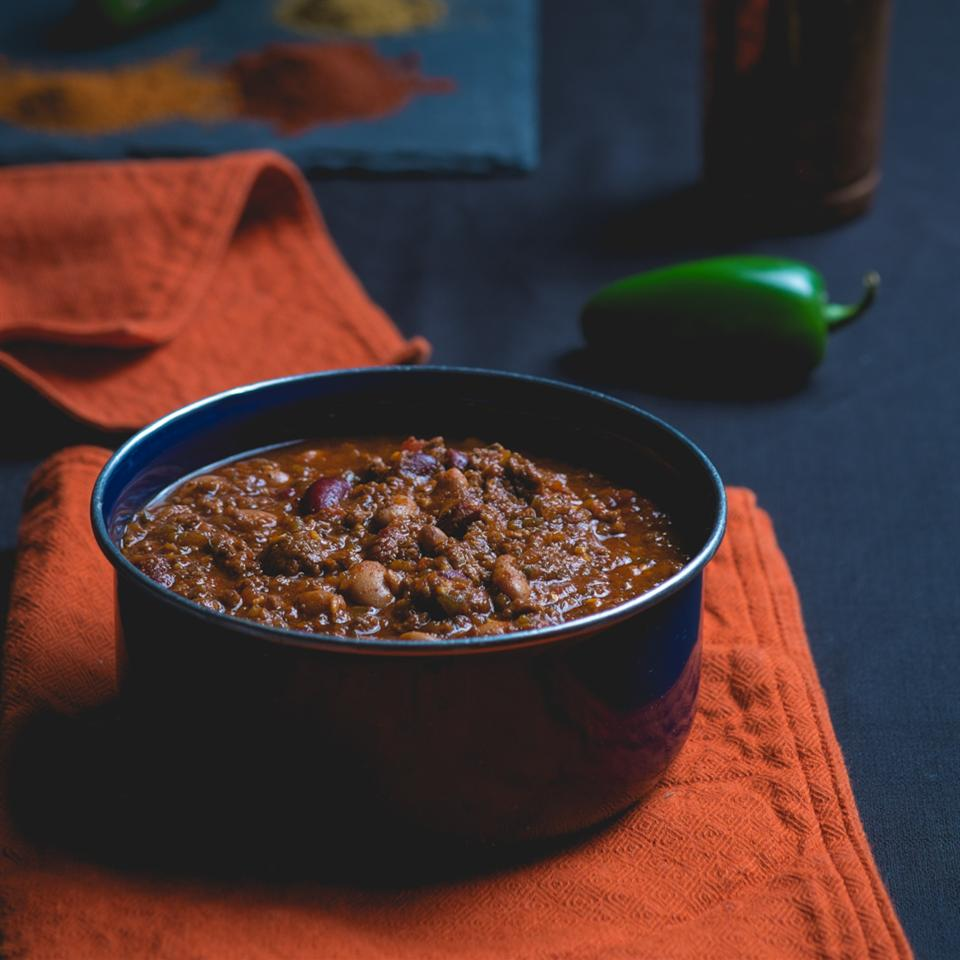

Back to home
Colorado Buffalo Chili

Description
This spicy chili recipe uses ground buffalo. To step up the heat, use
different peppers and experiment with the seasonings.
This gets even better if you let it sit overnight. The chili is so good
you'll need to find another way to use up your cheese and crackers.
Ingredients
- 1 pound ground buffalo
- ½ teaspoon ground cumin
- 1 pinch cayenne pepper, or to taste
- 1 (10 ounce) can diced tomatoes with green chiles
- 1 (10.75 ounce) can tomato soup
- 1 (14.5 ounce) can kidney beans, drained
- 1 (15 ounce) can chili beans, drained
- ½ medium onion, chopped
- ½ teaspoon minced garlic
- 1 Anaheim chile pepper, chopped
- 1 poblano chile pepper, chopped
- 2 tablespoons chili powder
- 1 teaspoon red pepper flakes
- 1 ½ teaspoons ground cumin
- ½ teaspoon cayenne pepper
- salt and ground black pepper to taste
Steps
-
Brown the buffalo in a skillet over medium heat; season with 1/2
teaspoon cumin and 1 pinch cayenne pepper, or to taste. Drain excess
grease.
-
Combine the buffalo, tomatoes with green chiles, tomato soup, kidney
beans, chili beans, onion, garlic, Anaheim chile pepper, poblano chile
pepper, chili powder, red pepper flakes, 1 1/2 teaspoons cumin, 1/2
teaspoon cayenne pepper, salt, and black pepper in a slow cooker. Cover
and cook on Low overnight or 8 hours.